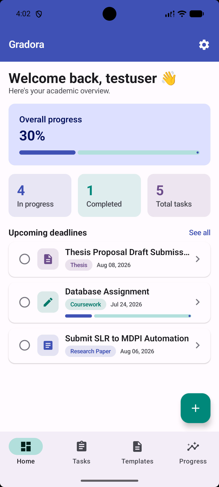
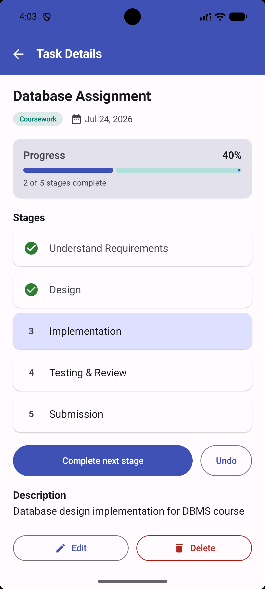
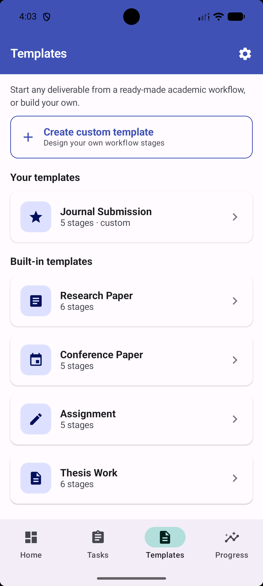
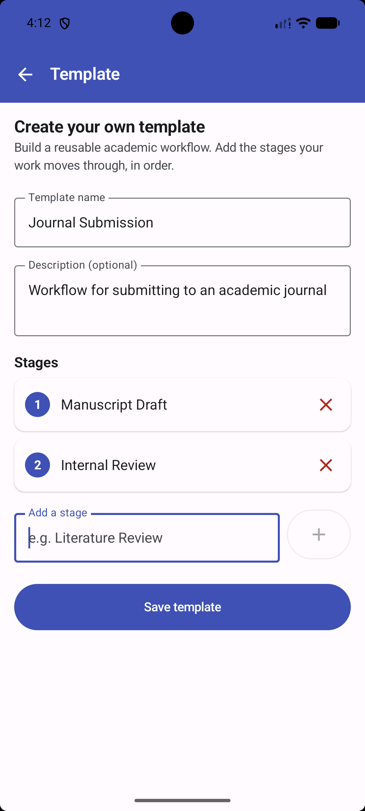
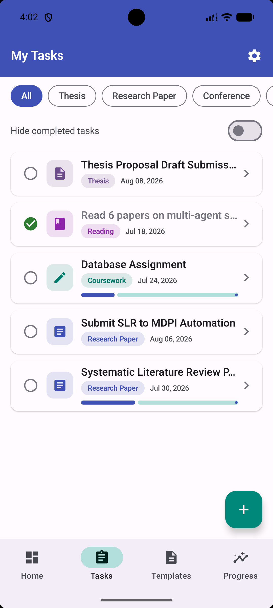
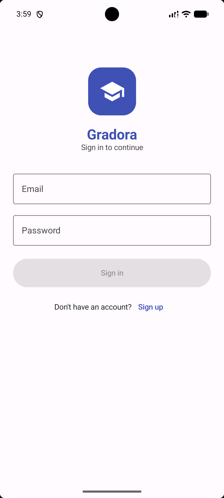
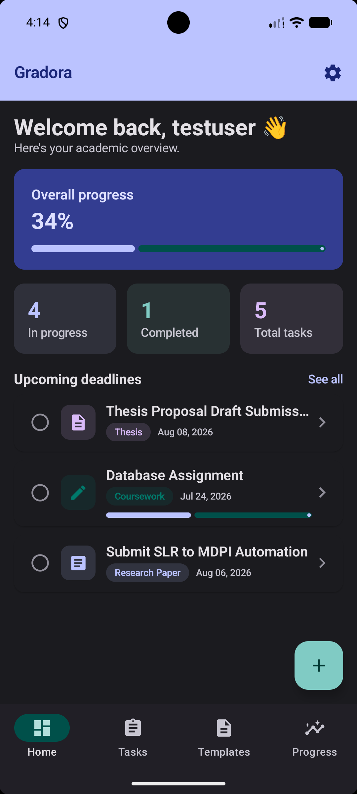

Gradora is the academic planner built for graduate students and researchers — breaking big deliverables into clear, trackable stages so you always know exactly where every paper, assignment, and thesis chapter stands.
Gradora is a task-management application for tracking the academic workflow of graduate students and researchers. It runs on Android and stores all your data locally on the device, so it works fully offline.
Where a normal to-do app just gives you a checkbox, Gradora understands that a research paper isn't done or not done — it moves through stages: literature review, methodology, results, revision, submission. Gradora tracks that journey and shows your progress rising with every stage you complete.
Organize tasks, schedule assignments, track progress, and manage deadlines — all through a clean, structured interface designed for academic work.

Purpose-built tools that general planners like Notion or Todoist simply don't have.
Complete work one stage at a time and watch the progress bar climb — from 0% at the first stage to 100% when every stage is done.
Start any deliverable from a ready-made workflow: Research Paper, Conference Paper, Assignment, or Thesis Work — with the right stages already set up.
Create custom templates with your own stages for the workflows unique to your research, and reuse them across tasks.
Schedule notifications so an upcoming deadline never slips past you — even when the app is closed.
Your own account with passwords protected by PBKDF2 hashing, and all data stored locally on your device.
A polished interface that adapts to your preference and follows your device theme — easy on the eyes, day or night.
Open any task to see its full workflow. Complete stages in order and your progress updates instantly — with a satisfying cue every time you move forward.

Use the built-in academic templates, or design your own. Custom templates sit right alongside the built-ins and turn into fully stage-tracked tasks in one tap.

Building a custom template is effortless — name it, add your stages in order, and it's ready to power every future task. Perfect for the deliverables no generic app understands.

A personalized dashboard greets you by name and shows your overall progress, what's in flight, and what's due next — so you always know where to focus.

From your first sign-in to a full day of work — in light and dark.


Gradora turns overwhelming academic deadlines into clear, stage-by-stage progress — so you can focus on the work that matters.
Gradora — built for grad students